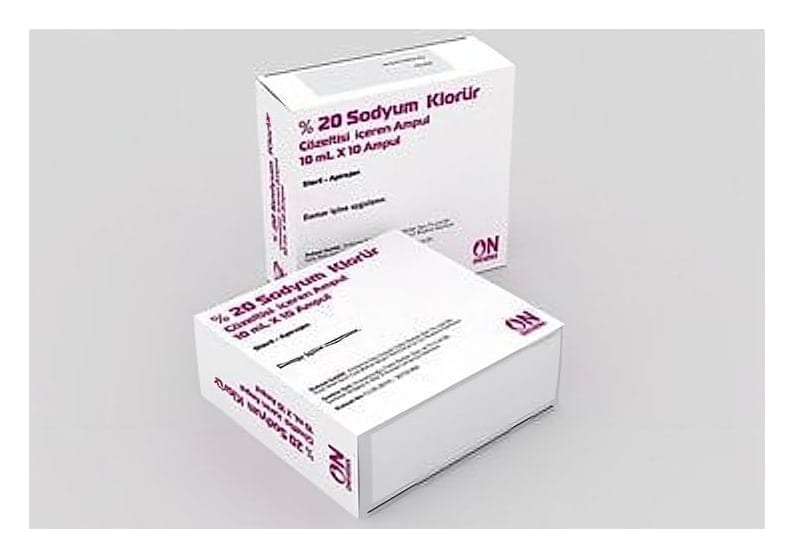

% 20 Sodyum Klorür Çözeltisi İçeren Ampul ,10 Ampul

Ne için kullanılır
KT · Bölüm 1Spesifik elektrolit ihtiyacı olan hastalarda parenteral sıvılara ilave edilir.Ayrıca; küçük semptomatik varikoz venler için sklerozandır.
Bu ilacı kullanmaya başlamadan önce KULLANMA TALİMATINI dikkatlice okuyunuz, çünkü sizin için önemli bilgiler içermektedir. Bu kullanma talimatını saklayınız. Daha sonra tekrar okumaya ihtiyaç duyabilirsiniz. Eğer ilave sorularınız olursa, lütfen doktorunuza veya eczacınıza danışınız. Bu ilaç kişisel olarak size reçete edilmiştir, başkalarına vermeyiniz. Bu ilacın kullanımı sırasında doktora veya hastaneye gittiğinizde bu ilacı kullandığınızı doktorunuza söyleyiniz. Bu talimatta yazılanlara aynen uyunuz. İlaç hakkında size önerilen dozun dı şında yüksek veya düşük dozkullanmayınız.
Hiponatremi Eğer vücuda giren tuz miktarı azalmışsa veya tuz itrahı artmışsa buna "tuz eksikliği sendromu" adı verilir. Tuzla beraber su kaybı da varsa "Hipotonik Dehidrasyon" denir. Her iki halde vücutta total sodyum miktarı azalmıştır. Tuzsuz rejim, diüretikler, aşırı su veya bira içme, ozmotik diüretiklerin veya dekstrozun intravenöz verilmesi, kronik böbrek hastalıklarında idrarla tuz kaybı, hipoaldosteronizm (Adison Hastalığı, Adrenalektomi, Hiporenisim, Kortikosteron metil oksidaz eksikliği, Lupus nefriti, Konjenital Adrenal Hiperplazisi, Selektif Tübüler Disfonksiyon) hiponatremiye neden olabilir. Hiponatremide (Serum sodyumu 120 mEq/L veya daha az), susuzluk, yorgunluk, kuvvetsizlik, bulantı, kusma, konfüzyon, stupor ve koma görülür. Tat duygusunun bozulması ve iştahsızlık mevcuttur. Aşırı sodyum kayıplarında; kusma, ishal, pilor stenozu, aşırı terlemede, İdrarla aşırı sodyum klorür kayıplarında; ・ Sodyum kaybettiren diüretik alımlarında, ・ Sodyum kaybettiren nefritlerde, ・ Akut böbrek yetm ezliğinin poliüri devrinde, Hemodiyaliz hastalarında; aşırı sıvı ultrafiltrasyonu yapılırken, su ile beraber sodyum konveksiyon ile kaybolduğu hallerde, sodyum açığını yerine koymak, hem damar yatağını hipertonik bir sıvıyla doldurmak, hem de bunu yaparken az miktar sıvıyı vermeyi gerektiren durumlarda endikedir. Ayrıca; cilt ödemlerinin çekilmesinde lokal olarak alerjik ödemde, testislerde çeşitli nedenlerle meydana gelen enfektif olmayan ödemlerin üzerine pansuman şeklinde uygulanır.